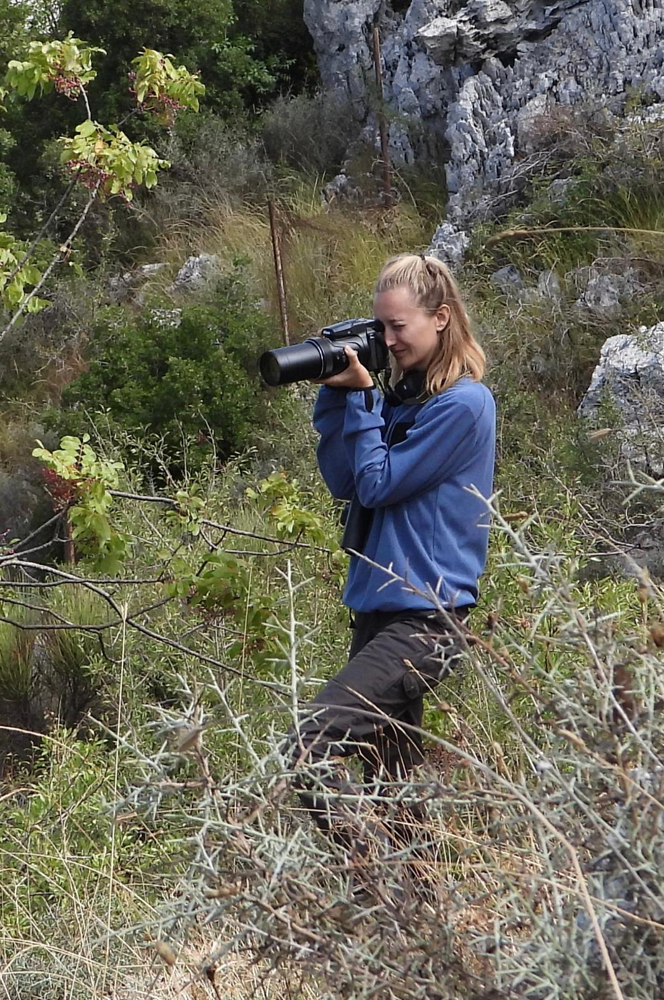
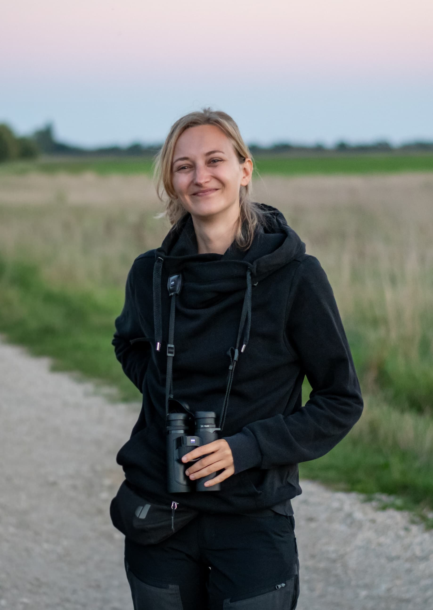

حوار: شيرين بو رفول

بين مراقبة مسارات الهجرة وتوثيق المخالفات، تتحدث ألكسندرا، المتطوعة مع CABS، عن تجربتها الميدانية في لبنان وأوروبا، وعن الصبر والمخاطر والتعاون الذي يتطلبه العمل لحماية الطيور. وفي هذا الحوار، تشرح لماذا تميّز بين الصياد المسؤول ومن يخالف القانون.
ألكسندرا، عرّفي عن نفسك من فضلك، وأخبرينا كيف بدأت رحلتك في حماية الطيور وعملك مع منظمة CABS؟
أنا ألكسندرا، أبلغ من العمر 33 عامًا، وأعمل متطوعة مع منظمة CABS منذ أكثر من ثلاث سنوات. درست علم أحياء الحفظ في فيينا، حيث تعمّقت كثيرًا في مجال حماية الأنواع، ونشأ لديّ حب حقيقي للطيور بشكل خاص. وفي عملي الأساسي، أعمل مع BirdLife Austria في مجال مكافحة الاضطهاد غير القانوني للطيور الجارحة في النمسا، لذلك فأنا منخرطة في هذا المجال مهنيًا، إلى جانب عملي التطوعي.
أنتِ ألمانية، وتعيشين في النمسا، وتشاركين في مهام ميدانية في دول مختلفة. ما الذي يدفعك إلى الاستمرار في هذا النوع من العمل؟
أعتقد أن الدافع الأكبر بالنسبة لي هو أن أقوم بدوري في منع البشر من تدمير الطبيعة. أؤمن بأنه من المهم أن ندافع عن الأشياء التي تعني لنا الكثير. وبالطبع، قد يكون هذا العمل محبطًا ومرهقًا بشكل كبير أحيانًا، لكنني أستمد قوتي من الأشخاص الذين أخوض إلى جانبهم هذه المعركة. أن نحتفل معًا بالانتصارات الصغيرة والكبيرة، وأن نمنح بعضنا الشجاعة والدعم، فهذا شيء جميل جدًا.
ما هو دورك داخل منظمة CABS، وما هي مسؤولياتك الأساسية خلال الحملات الميدانية؟
بصفتي ناشطة ميدانية متطوعة، تتمثل مهمتي الأساسية في مراقبة مناطق الصيد، ورصد الصيد غير القانوني وتوثيقه، وجمع أدلة قوية، مثل الصور ومقاطع الفيديو وغيرها، بحيث يمكن تسليمها إلى السلطات المختصة. كما تُستخدم المواد التي نجمعها في حملاتنا الدولية للتوعية وفي أنشطتنا الإعلامية.

عندما نتحدث عن مراقبة مخالفات الصيد وتوثيقها، ماذا يعني ذلك فعليًا على الأرض؟
يعني أن تبقى في حالة تأهب طوال الوقت. الأمر يحتاج إلى الصبر والهدوء، وربما إلى قدر من العناد أيضًا. الاستسلام بسرعة ليس خيارًا في هذا العمل. ويجب أن تتمتع بقدرة كبيرة على تحمّل الإحباط. تجلس كثيرًا، تراقب، تنتظر، ثم فجأة قد تتسارع الأحداث بشكل كبير، وعندها يجب أن تكون جاهزًا للتحرك.
لقد شاركتِ في مهام ميدانية في لبنان. ما أكثر ما أثار إعجابك أو فاجأك بشأن الصيد وهجرة الطيور هنا؟
هجرة الطيور هنا مذهلة بكل معنى الكلمة. بسبب الموقع الجغرافي الفريد للبنان بين البحر والجبال، يشكل البلد عنق زجاجة مهمًا جدًا للطيور المهاجرة. فعلى سبيل المثال، تمر عبر لبنان تقريبًا جميع نسور العقاب الأصغر المرقطة في العالم. كما يمكن مشاهدة عدد لافت جدًا من الأنواع بكثافة نادرًا ما تُرى في أماكن أخرى. إنه مشهد طبيعي رائع بالفعل. وفي المقابل، لم أرَ في حياتي هذا العدد الكبير من الطيور الجارحة التي يتم إطلاق النار عليها أو محاولة اصطيادها. وهذا التناقض من الصعب جدًا استيعابه.
استنادًا إلى خبرتك في دول مختلفة، ما أبرز الفروقات التي لاحظتِها بين لبنان وأوروبا فيما يتعلق بالصيد غير القانوني؟
بالمقارنة مع النمسا أو ألمانيا، فإن دوافع قتل الطيور مختلفة تمامًا. في النمسا، يطلق بعض الأشخاص النار على الطيور الجارحة أو يسممونها لأنهم يعتبرونها آفات أو منافسًا لهم في صيد الأرانب البرية وطائر الدراج. أما هنا، فيتم إطلاق النار على الطيور المهاجرة كهواية أو من أجل أكلها. والفرق الثاني هو العدد الهائل للطيور التي تُقتل بشكل غير قانوني، وهو على نطاق مختلف تمامًا.
هل واجهتِ يومًا مواقف صعبة أو خطرة خلال عملك الميداني؟ وكيف تتعاملين معها؟
ليس في لبنان، لكن في شمال إيطاليا، قام شخص في إحدى المرات بتوجيه بندقية صيد نحوي. كان ذلك خلال أول مهمة ميدانية لي، وبالطبع شعرت بالخوف في تلك اللحظة. ولحسن الحظ لم يحدث شيء، وكان زميلي داعمًا جدًا وساعدني على تجاوز التجربة. للحظة فكرت: «ما الذي أفعله هنا بحق الجحيم؟». وبعد عشرين دقيقة فقط، وجدنا شباك صيد غير قانونية، وعندها أدركت مجددًا أن كل ذلك يستحق العناء.
ما مدى أهمية التعاون بين المنظمات الدولية والفرق المحلية والقوى الأمنية لتحقيق نتائج حقيقية في مكافحة الصيد غير القانوني؟
التعاون مع الشرطة أساسي لنجاح العمل، فمن دونه لا نملك فرصة حقيقية في مواجهة الصيد الجائر. والأمر نفسه ينطبق على التعاون داخل الفريق بين الأعضاء اللبنانيين والدوليين. تجلب CABS معها عقودًا من الخبرة والتخصص في مكافحة الصيد الجائر، وهذه الخبرة أساسية للعمل بفعالية. لكن الجزء اللبناني من الفريق مهم بالقدر نفسه، لأن أفراده يعرفون الظروف المحلية ويعملون على الأرض طوال العام. وفقط من خلال العمل معًا يمكننا تحقيق نتائج حقيقية.
لو كان بإمكانك اختيار مجال واحد داخل مكافحة الصيد الجائر للتخصص فيه بشكل أعمق، فما هو؟ ولماذا؟
بما أن مكافحة الصيد الجائر لا تتعلق فقط بالطيور، بل تشمل مجموعات أخرى من الحيوانات أيضًا، فأنا بالفعل أعمل في مجال متخصص جدًا، وهو القتل غير القانوني للطيور، وخصوصًا الطيور الجارحة. ولا أعتقد أن المزيد من التخصص سيكون مفيدًا، لأن امتلاك مهارات متنوعة يمنحنا أيضًا الكثير من المزايا في هذا العمل.

بعيدًا عن العمل، ما هي هواياتك واهتماماتك؟ وما الأنشطة التي تعبّر أكثر عن شخصيتك؟
ألعب الكرة الطائرة منذ أن كان عمري تسع سنوات. وأحب جدًا قضاء الوقت في الطبيعة، سواء عبر المشي لمسافات طويلة، أو جمع الفطر، أو مراقبة الطيور. كما أستمتع كثيرًا بزراعة الخضروات بنفسي.
يعتقد بعض الناس أن مكافحة الصيد غير القانوني تعني الوقوف ضد الصيادين. كيف تشرحين الفرق بين الصياد المسؤول والصيد غير القانوني؟
أولًا، المسألة الأساسية هي القانون، وهذا هو الفارق الرئيسي. الصياد المسؤول يمارس الصيد ضمن القانون، ويحترم مواسم الصيد، والأنواع المحمية، والحصص المسموح بها. أما الصيد غير القانوني فيعني تجاهل كل ذلك: إطلاق النار على الأنواع المحمية، والصيد خلال المواسم المغلقة، واستخدام وسائل صيد محظورة. معركتنا ليست ضد الصيادين بحد ذاتهم، بل ضد الأشخاص الذين يخالفون القانون ويهددون الحياة البرية.
بعد تجربتك في لبنان، ما الرسالة التي تودين توجيهها إلى الصيادين، والشباب، وكل المهتمين بحماية الطيور والطبيعة؟
هجرة الطيور واحدة من أعظم عجائب الطبيعة، ولبنان يقع في قلب هذا المسار. وأود أن أطلب من الصيادين أن ينظروا إلى هذه الطيور ليس كأهداف، بل ككائنات ثمينة تعبر سماءهم. أما للشباب، فأقول: اخرجوا إلى الطبيعة، ارفعوا رؤوسكم نحو السماء، وشاركوا في حمايتها. فكلما ازداد عدد الأشخاص الذين يعرفون هذه الطيور ويحبونها، ازدادت فرصها في النجاة وإكمال رحلتها.